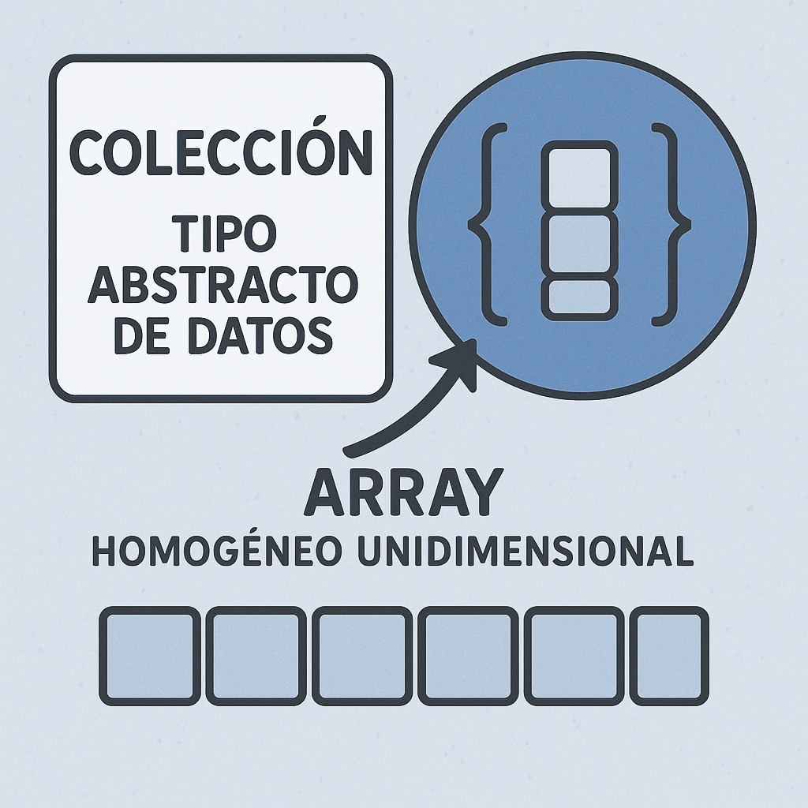

Unidad 10
Descargar estos apunte en pdf o html
Índice
Programación Orientada a Objetos
Introducción
La POO es un paradigma de programación que pretende mejorar aspectos de la programación imperativa tradicional tales como:
- Abstracción con la que representamos el problema.
- Portabilidad del código y por tanto su reusabilidad.
- Modularidad del código y por tanto legibilidad.
Cuando programamos en lenguaje orientado a objetos, lo que se debe hacer es atacar los problemas dividiéndolos en unidades lógicas denominadas objetos, que colaborarán entre ellos para resolver el problema.
Podemos considerar el paradigma Orientado a Objetos como un 'superconjunto' de la programación imperativa y estructurada. Esto es, nos proporciona más herramientas para abordar la resolución de los problemas.
Definición de Tipo Abstracto De Datos o TAD
Para definir una clase en POO (Programación Orientada a Objetos), debemos pensar en términos de Tipo Abstracto de Datos (TAD) y para definir un TAD, nos preguntaremos que tipos de entidades intervienen en un problema y las operaciones que se pueden realizar entre ellas.Posteriormente, intentaremos describirlas de forma abstracta, libres de cuestiones de implementación y representación.
Por tanto, a esta definición abstracta, completa y no ambigua de una estructura de datos junto con el conjunto de operaciones que se pueden hacer sobre ese tipo de datos la denominaremos TAD.
Deberemos tener en cuenta que un TAD puede tener una o más implementaciones y una de estas implementaciones se definirá a través de una clase.
Definición de clase
Puesto qui son la implementación total o parcial de un TAD. Podemos decir que es una definición de tipo abstracta, que permite agrupar datos en una entidad y asociarle un comportamiento.
Una clase nos permitirá definir objetos que van a tener la misma estructura y comportamiento. Además, también se diferencias de los TAD en que añade conceptos como el de encapsulamiento, paso de mensajes, herencia y polimorfismo que no se contemplan en los TAD y que son propios de la POO.
Existen autores que las definen con 2 naturalezas:
-
Como Tipo: Implementa un TAD con sus atributos y operaciones.
Por ejemplo, en C#, la clase Array implementa el TAD Colección e implementa una concreción que permite almacenar una colección de elementos del mismo tipo (homogénea) y realizar operaciones sobre ellas, como acceder a un elemento por su índice, ordenar los elementos, etc. Además, nos permite crear objetos de tipo
Arrayque representan un conjunto de elementos. Nosotros la hemos estado utilizando en la unidad anterior sin pensar en estos términos.
-
Como módulo: Organización y encapsulación de software.
Por ejemplo, en C#, son las que hemos estado creando hasta ahora y que solo contenían métodos estáticos (módulos). Un ejemplo puede ser la clase
Mathde las BCL y que solo contiene funciones de utilidad matemática. A esta organización también se las conoce con el estereotipo<<Utility>>en POO.""Una clase es un tipo definido por el usuario que encapsula datos y comportamiento.- Bjarne Stroustrup (Crador del lenguaje C++)
Elementos que definen una clase
- Un Nombre: Que describe a la clase.
- Atributos o Campos: Son datos necesarios para describir los objetos creados a partir de la clase.
La combinación de sus valores determina el estado de un objeto. - Operaciones, Métodos o Servicios
Describe la operaciones posibles sobré un objeto de esa clase ya descritas en el TAD.
Debería se el único modo de acceder a los atributos. - Roles: Relaciones que una clase establece con otras clases.
Por ejemplo, en este dibujo que representa una clase en UML:
- Nombre:
Cuenta - Campos:
Saldo: Representa el saldo de la cuenta y por tanto su estado.Titular: Representa el titular de la cuenta y no debería cambiar a lo largo de la vida de la cuenta, esto es, es inmutable.
- Operaciones:
Ingreso(in cantidad: double): void: Permite ingresar una cantidad de dinero en la cuenta y cambia elSaldoy por tanto su estado.Reintegro(): double: Permite retirar una cantidad de dinero de la cuenta y cambia elSaldoy por tanto su estado.
- Roles: No tiene relaciones con otras clases en este ejemplo.
Definición de objeto
La creación o instancia en memoria de un elemento de la clase.
De las anteriores definiciones se infiere que: "Un objeto es un conjunto de atributos y métodos que permiten manipular y/o modificar dichos atributos, cambiando así el estado del mismo."
üìå Nota: Para la mayor√≠a de lenguajes actuales como C#, todo son objetos. De hecho los tipos básicos que hemos visto hasta ahora tambi√©n son, para √©l, 'objetos'.

Composición de un objeto
-
Estado: Vendrá dado por el valor de sus campos y su rol durante la ejecución.
-
Comportamiento: Que será el modo en que las operaciones cambian a su estado.
-
Una Identidad: que me permitirá distinguirlo de otros.
- Dos objetos son iguales si tienen el mismo estado.
- No es lo mismo identidad que igualdad.
Definición de Campo
También conocido según el contexto como Atributo o Propiedades. Nos describirá los objetos de una clase y sus valores indicarán el estado de un objeto.
¿Qué tipos hay?
- De Instancia o también (de objeto)
- Serán diferentes en cada objeto.
- Necesitaré de un objeto instanciado (creado) en memoria para acceder a ellos.
- De clase o también estáticos
- Tendrán el mismo valor en todos los objetos de la clase, por tanto almacenan características comunes a todos ellos.
- No necesito un objeto instanciado para acceder a ellos.
- Son visibles desde cualquier método de la clase (ya sea de instancia o no).
Definición de Método
Definen el Comportamiento y las Operaciones que se pueden realizar con los objetos. Además, permiten interactuar y relacionarse a los objetos.
¿Qué tipos hay?
- De instancia o también (de objeto)
- Necesitaré de un objeto instanciado (creado) en memoria para acceder a ellos.
- Pueden acceder a campos de instancia como de clase.
- Pueden modificar el estado de un objeto concreto en memoria si este es mutable.
- De clase o también estáticos
- No necesito tener un objeto instanciado en memoria para acceder a ellos.
- Solo pueden acceder a los campos de clase y no a los de instancia.
- De acceso y actualización
- También se les conoce como Accesores - Mutadores en general, Propiedades (C#, Kotlin, Swift, etc.), Getters - Setters (Java, C++, etc.).
Enfoque de los métodos desde la teoría de POO
En la teoría tradicional de la POO, los objetos se comunican entre ellos a través de un mecanismo de paso de mensajes. (Alan Kay, Bertrand Meyer) Esto significa que, en el fondo, cuando desde un método de un objeto de instancia llamamos o invocamos a un método de otro objetos, estaremos haciendo este paso de mensajes y por tanto comunicando ambos objetos. Aunque existen más formas de pasar estos mensajes, pero la más básica es esta.
Vamos a verlo a través de un ejemplo 'simplificado' de código para entender el concepto 'abstracto' de mensaje y comunicación entre objetos:
class Persona
{
public void MetodoDeInstancia()
{
Phone tlf = new ("iPhone 17");
// Mensaje 1
// Un objeto concreto de Persona (en el ejemplo 'María')
// Se comunica con e objetos tlf a través de un
// mensaje, esto és llamando a su método Enciende()
// Esto cambia el estado del objeto tlf a encendido.
tlf.Enciende();
// Mensaje 2
// María pasa el mensaje a tlf de que llame a un número
// cambiando su estado a llamando...
tlf.Llama(676345266);
}
}
Definición de Encapsulación
En POO, se denomina encapsulación al la ocultación del estado, es decir, de los atributos, de un objeto. De tal manera que, solo se puede cambiar mediante las operaciones definidas para ese objeto o sus accesores - mutadores. De esta forma el usuario de la clase solo interacciona con los objetos abstrayéndose de como están implementados (no sabe nada de la implementación). Con esto, se evita que el usuario pueda cambiar su estado de maneras imprevistas e incontroladas.
Definición de Constructor Y Destructor
Constructor:
Método o métodos especiales que me servirán para instanciar e inicializar el estado de un objeto en memoria.
Toda clase debe tener al menos un constructor.
Destructor:
Un único método especial encargado de eliminar una instancia en memoria de un objeto.
En la gram mayoría de lenguajes OO modernos no hace falta definirlos y llamarlos, ya que de esta labor de eliminación de instancias de objetos en memoria, se encarga el denominado 'recolector de basura' (GC), cuando un objeto ya no es referenciado por nadie.
Instanciando objectos de una clase
Para crear o instanciar objetos de una determinada clase se utiliza el operador new
new <NombreTipo>(<parametros>)
Este operador crea un nuevo objeto del tipo cuyo nombre se le indica. Para ello llama al constructor del objeto mas apropiado según los valores que se le pasen <parametros>, y devuelve una referencia a la dirección de memoria dinámica donde se ha creado el objeto.
Cuenta cuenta1 = new Cuenta();
Cuenta cuenta1 = new ();
Para acceder a los campos y a los métodos de un objeto usaremos el operador . que es el operador de acceso a miembros.
<objeto>.<campo>
<objeto>.<método>(<parámetros>)
Por ejemplo, para acceder a los campos y métodos de la clase Cuenta que hemos definido anteriormente, lo haríamos de la siguiente manera:
cuenta1.Saldo = 30000;
Console.Writeline(cuenta1.Titular;
Representando objetos instanciados en memoria
Los objetos definidos por nosotros suelen ser tipos referencia, significa que el identificador cuenta1 será una referencia en el Stack a una instancia en memoria de un objeto de tipo Cuenta en el Heap. Puedes ver los conceptos de Stack (Pila) y Heap (Memoria Montón) descritos en el Anexo I de la Unidad 3.
Nosotros para simplificar en estos apuntes, este tipo de referencias las vamos a representar a partir de ahora de la siguiente forma equivalente al esquema que hemos dibujado arriba. De tal manera que si hacemos ...
Cuenta cuenta1 = new();
cuenta1.Saldo = 30000;
cuenta1.Titular = "Xusa";
y si asignaramos la referencia de cuenta1 a otra variable, por ejemplo cuenta2, lo representaremos de la siguiente manera:
Cuenta cuenta2 = cuenta1;
// Mostrará "Iguales: True"
bool iguales = cuenta2 == cuenta1;
Console.WriteLine($"Iguales: {iguales}");
// Mostrará "Idénticos: True"
bool identicos = ReferenceEquals(cuenta2, cuenta1);
Console.WriteLine($"Idénticos: {identicos)}");
Recuerda que ambas referencias 'apuntarán' al mismo objeto en la memoria montón y por tanto el método ReferenceEquals nos devolverá True indicándonos que ambas variables apuntas al mismo objeto en la memoria (HEAP).
Pero, ¿qué pasa si hacemos una copia del objeto?...
Cuenta cuenta2 = new Cuenta();
cuenta2.Saldo = cuenta1.Saldo;
cuenta2.Titular = cuenta1.Titular;
bool iguales = cuenta2 == cuenta1;
// Mostrará "Iguales: False"
Console.WriteLine($"Iguales: {iguales}");
bool identicos = ReferenceEquals(cuenta2, cuenta1);
// Mostrará "Idénticos: False"
Console.WriteLine($"Idénticos: {identicos}");
Cuidado
Aunque cuenta2 y cuenta1 referencian a diferentes objetos en memoria y por tanto ReferenceEquals(cuenta2, cuenta1) se evaluará a False siempre, podríamos pensar que cuenta2 == cuenta1 se evaluaría a True ya que tienen el mismo contenido, pero esto no es así. Ya que no le hemos indicado a C# cómo comparar dos objetos de tipo Cuenta y por tanto, C# compara las referencias de ambos objetos y no su contenido. Por tanto, cuenta2 == cuenta1 se evaluará a False en este momento.
Concepto de inmutabilidad
Son objetos inmutables aquellos que una vez creados no pueden ser modificados. Es decir, no se puede cambiar el valor de sus campos o atributos.
Esto supone que cualquier operación que se realice sobre un objeto inmutable, devolverá un nuevo objeto con el resultado de la operación, pero el objeto original permanecerá sin cambios.
Aportan una serie de ventajas de las que podemos destacar ahora que:
- Permiten evitar efectos secundarios no deseados en el código, ya que al no poder modificarse, se garantiza que su estado no cambiará una vez creado.
- Son ideales para obtener instantáneas de datos, ya que una consulta de datos no debería tener ningún tipo de operación que la modifique.
- Facilitan la concurrencia y el paralelismo, ya que al no poder modificarse, no hay riesgo de que varios hilos de ejecución modifiquen el mismo objeto al mismo tiempo.
- Permiten una mejor optimización por parte del compilador y el recolector de basura, ya que al no poder modificarse, se pueden reutilizar objetos inmutables en lugar de crear nuevos objetos cada vez.
- Facilitan la comparación de objetos, ya que al no poder modificarse, se puede comparar el estado de un objeto inmutable con otro objeto inmutable sin preocuparse por cambios posteriores.
Nota
Más adelante veremos cómo definir nuestras propias clases o tipos de datos, además de muchos otros conceptos relacionados con el diseño orientado a objetos. Pero antes, a lo largo de las próximas unidades, vamos a ver una serie de clases que podremos encontrar ya definidas en la mayoría de lenguajes actuales, y que me permitirán instanciar objetos de una serie de objetos de uso común para manejo de cadenas, expresiones regulares, etc...